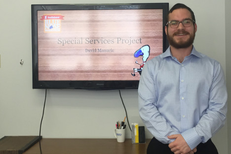
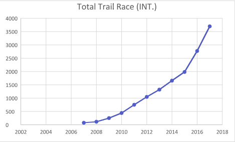

David Manuele
I'm a young professional looking for an exciting opportunity to launch my career. I am enthusiatic, knowledegable, and passionate about customer experience. My advanced education and diverse work experiences have prepared me to be adaptable and valuable in any workplace. My current personal situation will allow me to travel as needed and I am willing to relocate for the right role.
Quality education.
Upon completing the Recreation Management program at Dalhousie University, I was awarded a Bachelor of Science (Leisure) and a Bachelor of Management. The program provided me with an extensive insight into the leisure-based behaviors, and how strategically capitalize on the behaviors. During my studies I developed a keen interest in Customer Experience and Marketing, specifically how they pertain to sporting events.
Diverse experience.
My work experience with small businesses has left me prepared to face diverse challenges, learn fast, and take charge. Working with companies such as the Bluenose Marathon has allowed me to sharpen my management skills while actively working in the community.
Active lifestyle.
As a lifelong lover of sports, activity, and recreation, I value living a lifestyle which is active both physically and in community engagement. I work to both develop and participate in community wellness by participating in running groups, volunteering with Moksha yoga, and practicing Brazilian jiu jitsu.
Resume
A selection of highlights showcasing my qualifications and experience.
To view my full resume, click below.
Work Experience.
My internship as part of the Recreation Management program at Dalhousie brought me to the Scotiabank Blue Nose Marathon, the largest road race in Atlantic Canada and the marquee community event of the Halifax Region Municipality. I worked as the Participant Services Assistant, providing top-level customer service while assisting in multiple areas of the organization. My internship provided me the opportunity to develop promotional activities, assist in social media marketing, provide aid for race operations and logistics, attend sponsor events and much more.
Education.
I have recently completed both a Bachelor's of Science in Recreation and a Bachelor of Management from Dalhousie University. My education has prepared me to work adaptively in both team and self-directed settings while giving me the research skills I need to face any challenge.
Volunteering.
Physical activity and sports have a tremendous impact on community development. I strive to give back to community to help support services and events that continuously bring people together. For example, from 2014 - 2015, I volunteered as Head Coach for Martyr's basketball, a boy's basketball team comprising youth ages 14-15. During my time at Martyr's, I strove to teach the boys the value of hard work and determination. Continuing with my passion for the development of basketball in Canada, I also volunteered for the USports Final 8 Basketball tournament when it was held in Halifax in 2017 and again in 2018.
Projects
A brief description of some noteworthy projects which I have authored.
Special Services Project
As part of my intership with Scotiabank Bluenose Marathon, I was given the task to conduct an opportunity analysis for a potential expansion of the Halifax International Marathon Society.
Highlights
- Researched parcticipant-based event trends on a macro and micro scale
- Collected and analyzed data from multiple sources to assist in event design
- Designed and pitched a new event to staff members
Trail Running Trend Report
I researched and developed an in-depth analysis of the growth and development of trail running as a sport.
Highlights
- Created a database on Canadian Trail Running statistics to analyze growth in the local market
- Drew connections among peer-reviewed articles to offer a hypothesis on why trail running is growing at the intense rate which it is
- Used statistics provided by the I-TRA to prove exponential international growth of the sport of trail running
Community engagement & Volunteering
As someone with a passion for sport, leisure, and recreation, staying involved in my community is important to me.
Here are two examples of how I have worked to develop networks in my community to foster wellness and activity.
Running and yoga.
Building synergistic partnerships.
I am constantly looking for ways to create synergistic partnerships. While working for the Blue Nose Marathon, I facilitated a partnership with Moksha Yoga Halifax, the studio in which I volunteer with. I am a vey active member at Moksha Yoga Halifax and believed they aligned strongly with the goal of the Blue Nose; to engage the imaginations of fellow Nova Scotians in a way that inspires them to seek healthy, active and vital lifestyles. I proposed to Moksha a potential partnership opportunity, it was no surprise to see Moksha become an enthusiastic partner of the Blue Nose Marathon. This also helped the growth and development of the run club at Moksha to prepare for the Blue Nose. This partnership helped inspire runners to try yoga while inspiring yogis to try running!
The Excel program.
Teaching youth the importance of activity.
Promoting a healthy and active lifestyle for everyone includes children. That is why the Blue Nose Marathon places such an emphasis on the Youth Run. I was given the task of designing and implementing an promotional outreach program to increase youth registration and spread the word about the Blue Nose. I visited children around the HRM, with our amazing mascot Myles, to teach them about the importance of having a strong heart to prepare for a big race like the Blue Nose. We played games with Myles and I discussed the connection between physical activity and our heart rates, and how it connects to health.
What I do
As someone with a passion for sport, leisure, and recreation, staying involved in my community is important to me.
Here are some examples of how I stay involved.
Community runs
with Bluenose Marathon
Running is one of the best ways to experience your community while staying active and networking with new people. Through the Bluenose Marathon, I participate in community runs with various partners to help spread the joy of physical activity.
Energy Exchange
with Moksha Yoga
I am a proud participant in Moksha Yoga's Energy Exchange program, in which I volunteer at the Moksha studio. Moksha provides yoga classes to all of its volunteers, allowing me to participate in the yoga community.
Brazilian Jiu Jitsu
with Marcelo Garcia Halifax
Through jiu jitsu, I fell in love with the disciplined progress of martial arts. Jiu jitsu has taught me the endless value of hard work, persistence, humility, and consistent incremental progress.